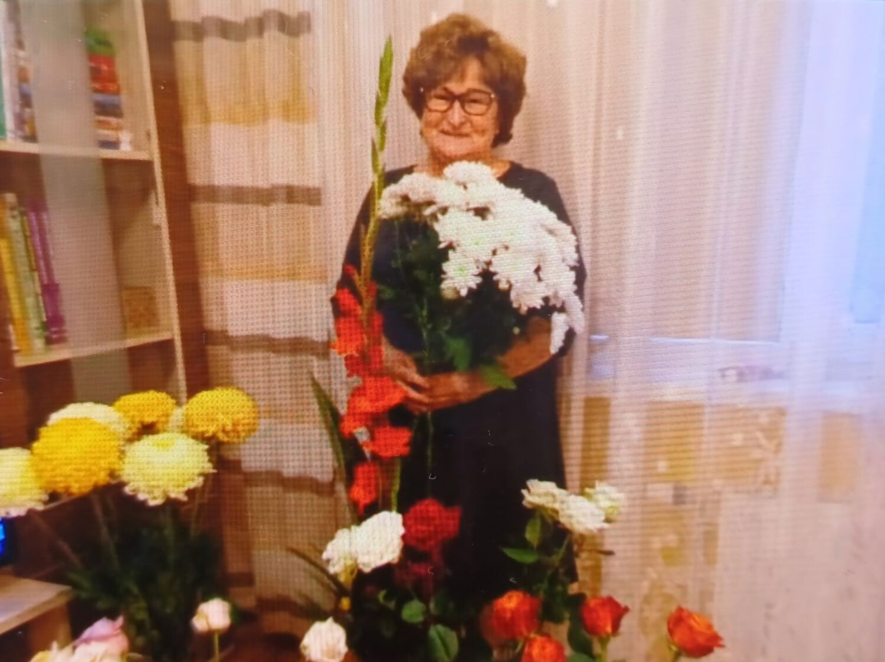

"Grūtākais vienmēr ir bijis noturēt augstu latiņu ne tikai pašai, bet arī skolai..."
Strādāja Siguldas pilsētas vidusskolā no 2011. līdz 2022.gadam
Intervētāja Endija Jakovicka
Kad un kāpēc jūs sākāt strādāt tieši Siguldas pilsētas vidusskolā? Kas bija tieši tas, kas jūs uzrunāja nākt šeit strādāt?
Pēc augstskolas pabeigšanas, 1975. gada 15. augustā, ierados darbā uz Siguldas internātskolu, kur 1983. gada 15. augustā, 1.vidusskolas direktors, Valdis Jēkabsons, mani uzaicināja darbā uz vidusskolu par 1. - 3. klašu skolotāju, bet par direktora vietnieci, mācību un audzināšanas darbā, kļuvu 1995. gadā, kad skola no ģimnāzijas statusa tika pārdēvēta par Siguldas 3. pamatskolu (Skolas ielā 3.).
Kādi bija jūsu pienākumi, kurus bija jāveic skolā, strādājot par mācību pārzini?
Pienākumi, kuri obligāti bija jāveic šajā darba nozarē bija, pārsvarā, skolēnu un skolotāju mācību procesa uzraudzīšana skolā, vērot skolotāju stundas, rīkot skolēnu mācību olimpiādes un konkursus, rīkot kursus un seminārus skolotājiem un darbiniekiem u.t.t.
Vai jūs, strādājot skolā, pasniedzāt arī kādu citu mācību priekšmetu, un vai jums bija arī iespēja tikt pie savas audzināmās klases?
Bez mācību pārzines darba, mācīju arī latviešu valodu, rokdarbus (tā toreiz sauca mājturību) un pat sportu savā audzināmajā klasē. Jā, arī dabu, jeb kā tagad saka - dabaszinības.
Vai jums vairāk gāja pie sirds darbs, strādājot par mācību pārzini vai kā skolotājai, ar savu audzināmo klasi un mācīt bērniem citus mācību priekšmetus?
Man patika vadīt stundas skolēniem, jo zināju, ka varu un protu iemācīt viņiem, bet, tajā pašā laikā, mācību pārzines darbs bija ļoti atbildīgs, jo no tevis ir atkarīgs mācību process, gaitas un dažādi mācību konkursi.
Kas, jūsuprāt, bija grūtākais ar ko saskārāties savā Siguldas pilsētas vidusskolas karjerā, strādājot par mācību pārzini?
Grūtākais vienmēr ir bijis noturēt augstu latiņu ne tikai pašai, bet arī skolai. Atceros, ka tolaik bijām labākā skola Rīgas rajonā, kad pie mums brauca Izglītības un zinātnes ministrijas pārstāvji un pat mans institūta pasniedzējs - Jānis Mencis (daudzu mācību grāmatu autors matemātikā).
Kurš no amatiem skolā jums likās visgrūtākais - mācību pārzines vai skolotājas amats?
Grūtākais bija būt mācību pārzinei, jo, kā jau teicu, tas prasīja lielu atbildību. Pateicos saviem kolēģiem un kolektīvam, ka mani atbalstīja, uzklausīja un bija līdzās arī grūtos brīžos gan Skolas ielā 3, gan tad, kad iekļāvāmies atkal SPV veidolā.
Ja jums būtu iespēja atgriezties atkal strādāt Siguldas pilsētas vidusskolā, par ko jūs vēlētos turpināt strādāt - skolotāju vai mācību pārzini?
Ja atgrieztos skolā (ko es vairs nevēlos), mācītu bērnus, jo, kā jau minēju iepriekš, tas man padevās, bet par mācību pārzini gan vairs nevēlētos, jo tas prasa lielu atbildību.
Kas, jūsuprāt, visvairāk ir mainījies mūsdienu jauniešos, salīdzinot ar jauniešiem, kad jūs strādājāt Siguldas pilsētas vidusskolā?
Ir pilnībā cita paaudze ar citiem, saviem uzskatiem, paražām, pieņēmumiem un domāšanu, bet es uzskatu, ka tai ir jādzīvo savādāk, labāk!
Kas ir visspilgtākais notikums vai lieta, kas jums ir palikusi atmiņā visspilgtāk, strādājot šajā skolā?
Notikumu tik daudz, ka pat neatceros visus, bet man noteikti patika, ka mums (Kr.Barona ielā) bija pašam kolektīvam savi svētki (zīmēšanas kabinetā).
Ko jūs domājiet par to, kā skolotāji mūsdienās pasniedz priekšmetus un izskaidro skolēniem vielu? Vai jūs uzskatiet, ka agrāk skolotāji pasniedza daudz skaidrāk, saprotamāk un labāk priekšmetus nekā tagad?
Skola, skolotāji šodien ir cita paaudze - demokrātiski (bet par daudz), daudz atvērtāki, brīvāki apkārt skolēniem, sabiedrībai, savos spriedumos, uzskatos un rīcībās. Nav vairs striktu noteikumu, ko drīkst, vai nedrīkst. Ir tehnoloģijas, kuras palīdz ātrāk atrast dažādas atbildes uz sev nezināmo (skolēni paši vairs nevēlās piepūlēties padomāt). Man, gan, ir prieks par erudītiem jauniešiem un skolotājiem, kā arī skolotāji šodien, tāpat kā tad, dod skolēniem iespēju izglītoties, tikai pieņemiet to pretim!
SĀKUMS